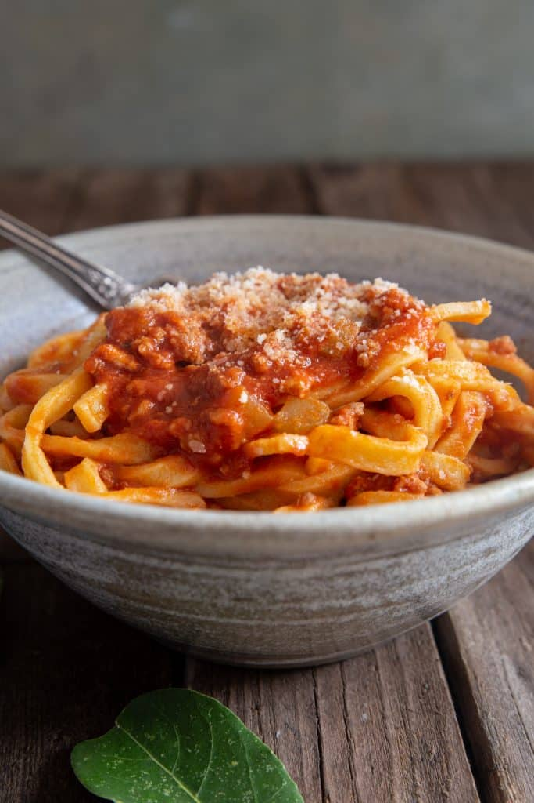

An authentic Bolognese sauce (Italian: Ragù alla Bolognese) is a slow-cooked meat sauce originating from Bologna, Italy. It's traditionally served with tagliatelle or used in lasagna. The true Bolognese is rich, savory, and subtly complex, with a focus on meat rather than tomato.

Bolognese sauce with pasta
Ingredients
2 tablespoons olive oil
1 small/medium carrot
1 small celery stalk
1 small onlion
300 g ground beef (70-80%)
300 g ground pork
0.5 cup or 120 ml dry red wine
2 tablespoons tomato paste
500 g tomato puree (passata)
2-3 pinches salt
2 dashes pepper
1-2 whole bay leaves
80 g milk (2% or whole milk)
Parmesan Cheese, Parmigiano-Reggiano
Directions
Cut the carrot, celery and onion very fine (but not too much that it becomes pulpy when cooked).
In a medium to large heavy pot add the olive oil and chopped vegetables, cook covered on low heat (stirring occasionally) until onion is transparent.
Increase the heat to medium and add the ground beef and pork. Stirring as the meat is cooking to break up the pieces. Once the meat has browned turned the heat up to high and add the wine.
Cook until the alcohol has evaporated (about 20-30 seconds) and the liquid has evaporated. Decrease the heat to medium/low and add the tomato paste, puree, salt, pepper and bay leaf. Gradually decrease the heat to the lowest setting cover and let simmer for three hours (the mixture should not boil). Stir occasionally.
After the time has passed remove the bay leaf and add the milk, heat thoroughly for a couple of minutes. Serve over cooked pasta and sprinkle some Parmigiano-Reggiano. Enjoy!